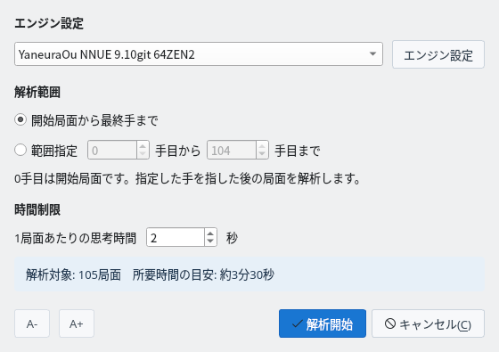
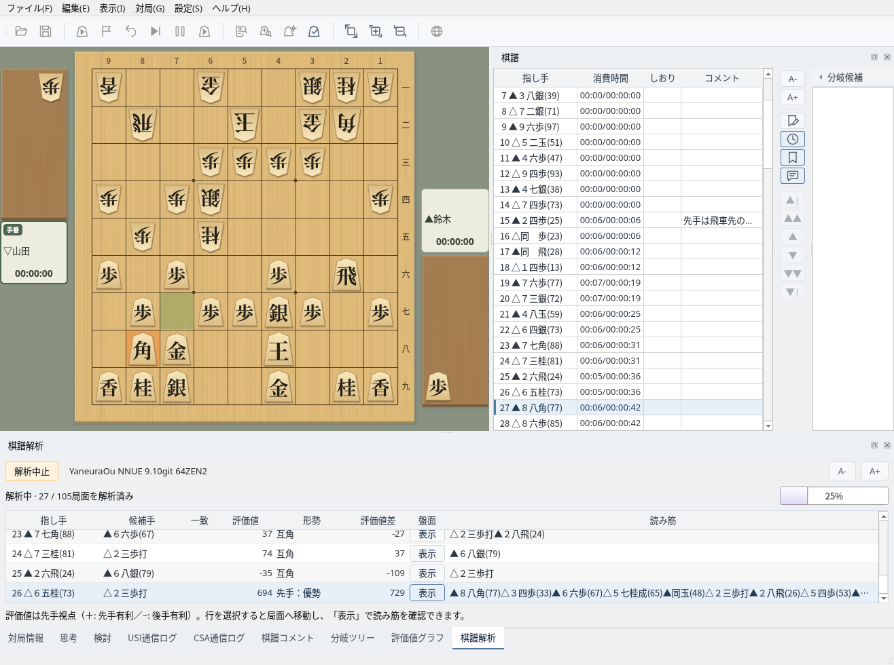
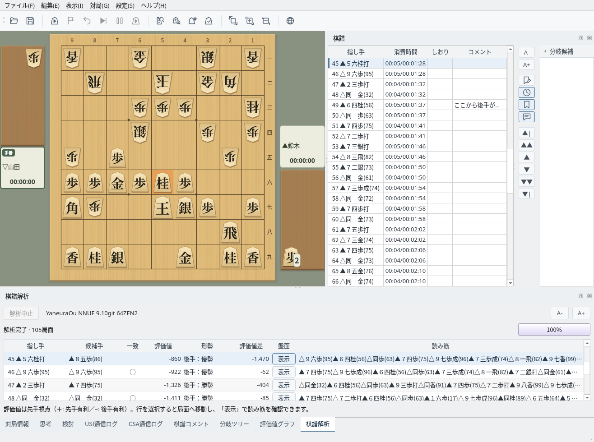
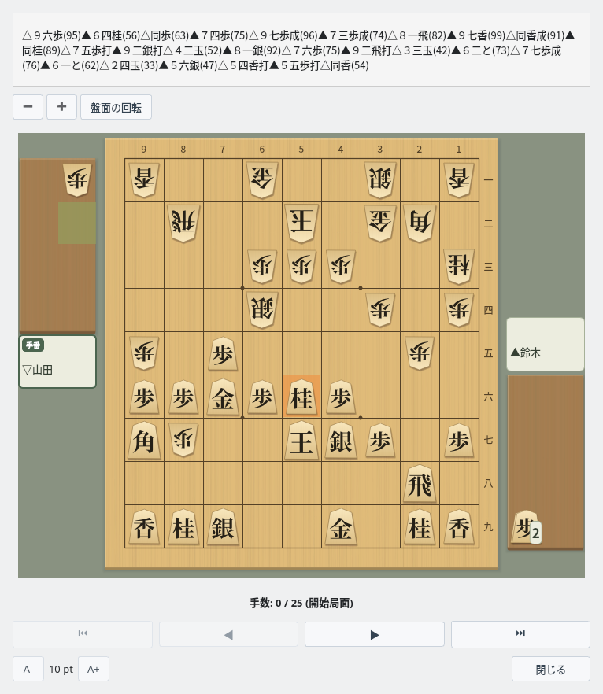
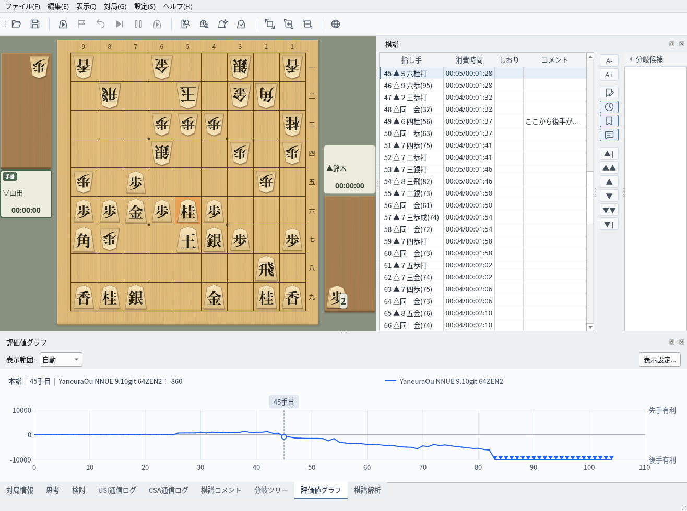

USIエンジンで棋譜を解析し、形勢の推移を把握
棋譜解析ダイアログで解析の条件を設定します
解析したい棋譜を表示します。対局が終わった後にそのまま解析することも、「ファイル」→「開く…」で読み込んだ棋譜を解析することもできます（棋譜管理）。分岐を表示しているときは、表示中の分岐を解析します。
「対局」→「棋譜解析…」（ツールバーのボタンでも可）で棋譜解析ダイアログを開き、次の項目を設定します。
ダイアログの下に解析する局面の数と所要時間の目安が表示されます。「解析開始」をクリックすると解析を始めます。設定は次回も復元されます。投了などの終局の行は解析しません。

棋譜解析ダイアログ：エンジン・解析範囲・思考時間を設定
解析した局面の評価値・候補手・読み筋を一覧で確認できます
解析を始めると下部に「棋譜解析」パネルが開き、解析を終えた局面の結果が1行ずつ追加されます。盤面と棋譜欄は解析中の局面へ移動し、評価値グラフも順に描かれます。進み具合は進捗バーと解析済みの局面数で確認できます。
途中で止めるときは「解析中止」をクリックします（「対局」→「棋譜解析中止」でも止められます）。それまでの結果は残ります。解析中は棋譜欄や盤面を操作できません。

解析中：盤面が解析中の局面へ移動し、結果が1行ずつ追加される
解析が終わると「解析完了」と表示されます。各列の内容は次のとおりです。
| 列 | 内容 |
|---|---|
| 指し手 | 棋譜の指し手。この手を指した後の局面を解析します |
| 候補手 | 直前の局面でエンジンが最善とした手 |
| 一致 | 指し手が候補手と同じときに ◯ を表示 |
| 評価値 | 先手視点の評価値（＋は先手有利、−は後手有利）。詰みは「mate 手数」で表示 |
| 形勢 | 評価値から判定した形勢（下の「形勢判断の基準」を参照） |
| 評価値差 | 直前の局面からの評価値の増減（先手視点） |
| 盤面 | 「表示」で読み筋を盤面で確認 |
| 読み筋 | エンジンが予想した以降の手順 |
行を選ぶと、盤面・棋譜欄・評価値グラフがその局面へ移動します。評価値差の大きい行は形勢が大きく動いた手です（この例では45手目の▲５六桂打）。結果は次の解析を始めるか、別の棋譜を読み込むか、新しい対局を始めるまで残ります。

解析結果：行を選ぶとその局面へ移動する
「盤面」列の「表示」をクリック（またはEnterキー）すると「読み筋表示」ウィンドウが開き、その局面からの読み筋を1手ずつ再生できます。「盤面の回転」や盤の拡大・縮小もできます。

読み筋表示：解析した局面からの読み筋を1手ずつ再生
形勢の推移をグラフで確認できます
「評価値グラフ」タブには、解析した評価値の推移が先手視点の折れ線で表示されます。上が先手有利、下が後手有利で、詰みの局面はグラフの上端・下端に印で表示されます。グラフをクリックすると、その手の局面へ移動します。
表示範囲は「自動」と「手動固定」を選べ、「表示設定…」で目盛りや文字の大きさを変えられます。グラフの画像は「ファイル」→「評価値グラフの画像をファイルに保存…」で保存し、「編集」→「評価値グラフ画像コピー」でコピーできます。

評価値グラフ：選んでいる手と評価値が上部に表示される
評価値から形勢を5段階で判定します
| 評価値 | 形勢 | 表示例 |
|---|---|---|
| 0 〜 100 | 互角 | 互角 |
| 101 〜 300 | やや有利 | 先手：やや有利 / 後手：やや有利 |
| 301 〜 600 | 有利 | 先手：有利 / 後手：有利 |
| 601 〜 1000 | 優勢 | 先手：優勢 / 後手：優勢 |
| 1001 以上 | 勝勢 | 先手：勝勢 / 後手：勝勢 |
| 詰み | 勝ち | 先手勝ち / 後手勝ち |